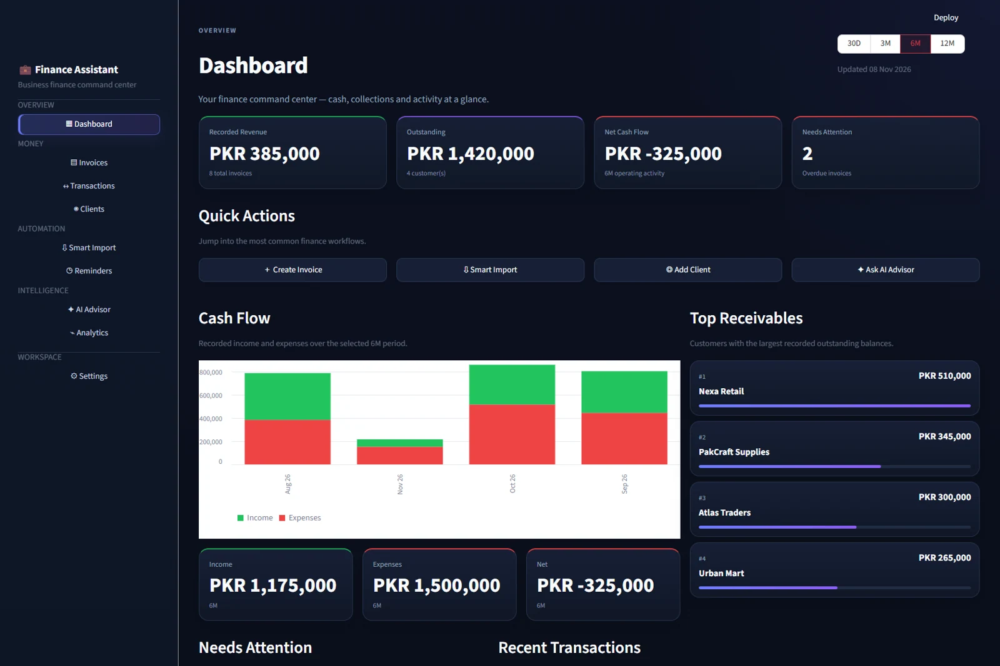

A-level student · Lahore, Pakistan
I build practical tools for everyday business.
I’m Rimshah. I’m interested in the space where AI, automation and business meet. I’m building tools that make messy information easier to work with.
I start with a business problem.I keep the source evidence.I test the awkward cases.
SELECTED WORK / 01–02
Two different problems.
The same practical approach.
I’m exploring how better workflows can help a team handle complaints, organise money and decide what to do next.
01 CUSTOMER OPERATIONS
View case study ↗AI-assisted workflowIndependent project
From a complaint screenshot to a checked response.
I built a workspace that suggests customer details, routes complaints, keeps evidence visible and asks a person to review replies before sending.
PythonOpenAISQLiteGmail / SMTP
02 FINANCE OPERATIONS

View case study ↗Rules & data workflowsIndependent project
A clearer picture of invoices, payments and cash.
I brought client records, invoice balances, imports and collection priorities into one workspace. The current analysis uses transparent rules and calculations.
PythonStreamlitPostgreSQLPandas
I use fictional records in these demonstrations. They’re portfolio builds, rather than paid client projects. Each case study explains what works, how it was checked and where it still falls short.
A LITTLE ABOUT ME
I like the bit where
a messy process
starts making sense.
✳I’m learning by building things I can open, test and explain.
I’m an A-level student in Lahore, interested in business, technology and practical AI. I enjoy figuring out where a team repeats the same steps, loses information or has to make a decision without enough context.
My projects give me a way to explore those problems. I’m especially interested in customer operations, finance workflows and automation that keeps people involved when a decision matters.
I use AI tools as a build and learning partner. They help me write, debug and test. I’m still developing my coding skills and working through the code so I can explain each part independently.
Read my build notes →